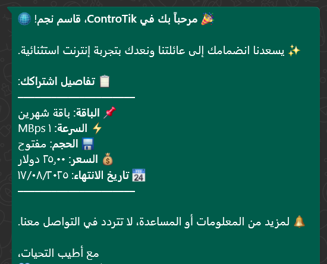
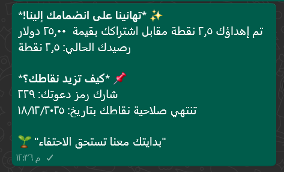
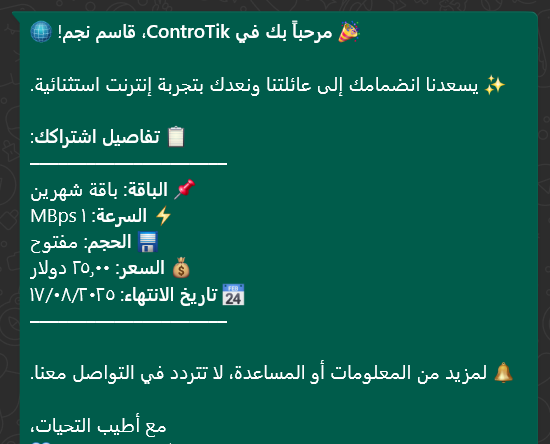
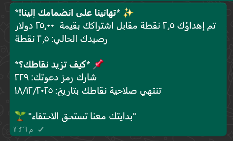

إدارة الباقات والاشتراكات
يوفر نظام ControTik واجهة متكاملة ومرنة لإدارة الباقات والاشتراكات، تتيح لصاحب الشبكة التحكم الكامل بجميع تفاصيل العروض المقدمة للمشتركين.
🔹 إنشاء وتعديل الباقات: يمكنك إنشاء باقات متعددة تتنوع حسب:
- السرعة (مثل 1 ميجا، 2 ميجا، إلخ)
- حجم البيانات (مثل 5 جيجا، 10 جيجا)
- الفترة الزمنية (أسبوعي – شهري – ربع سنوي...)
- العملة (ليرة – دولار – تركي – عملات مخصصة)
🔹 ربط الاشتراك بالمشترك: عند اختيار باقة، يمكن ربطها بمشترك جديد أو حالي، مع تسجيل تفاصيل العملية وتحديد وسيلة الدفع (كاش أو دين).
🔹 التجديد التلقائي: يمكن تفعيل ميزة التجديد التلقائي، حيث يقوم النظام بعد انتهاء الباقة بـ:
- تجديد الاشتراك تلقائيًا بنفس الباقة
- تسجيل دين على المشترك بالقيمة الجديدة
- إرسال إشعار للمشترك بتفاصيل التجديد والدين
- بدء حملة تذكير تلقائي يومي حتى يتم السداد
🔹 إدارة حالة الباقات: إمكانية تفعيل أو إلغاء تفعيل أي باقة مؤقتًا دون حذفها، ما يتيح مرونة في العروض حسب المواسم أو العروض الترويجية.
🔹 عرض وتحليل الاشتراكات: يحتوي النظام على شاشة مخصصة لمراجعة جميع الاشتراكات المفعّلة أو المنتهية، مع خيارات فلترة وفلترة مركبة، وتصدير النتائج إلى Excel محمي.
من خلال هذا النظام، يمكن لصاحب الشبكة إدارة العروض بدقة، وتحقيق أقصى استفادة من نظام الاشتراكات دون أي فوضى أو أخطاء حسابية.

 


